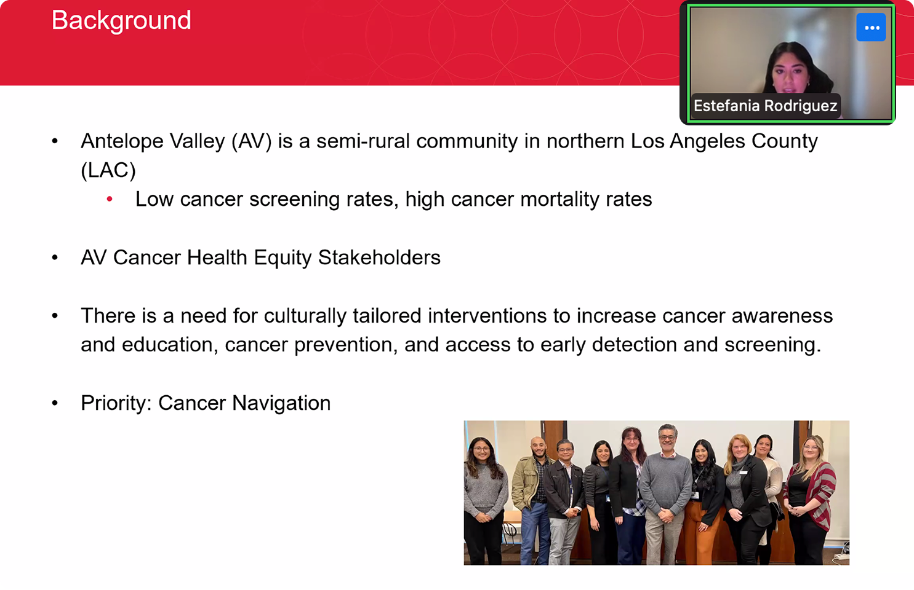
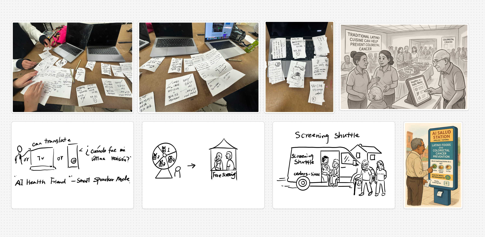
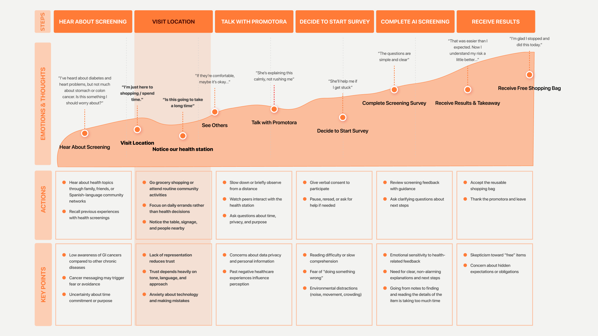
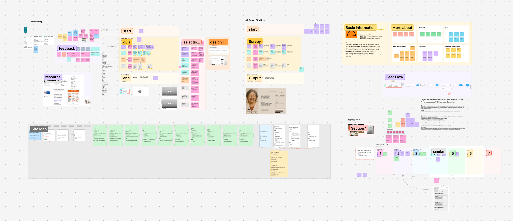
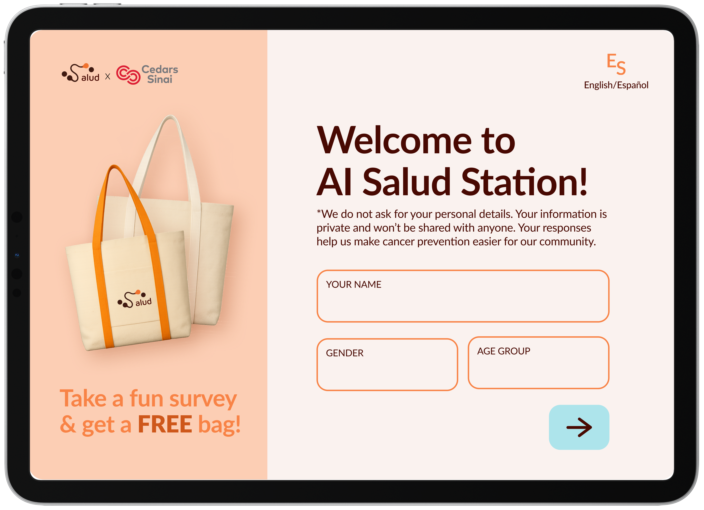
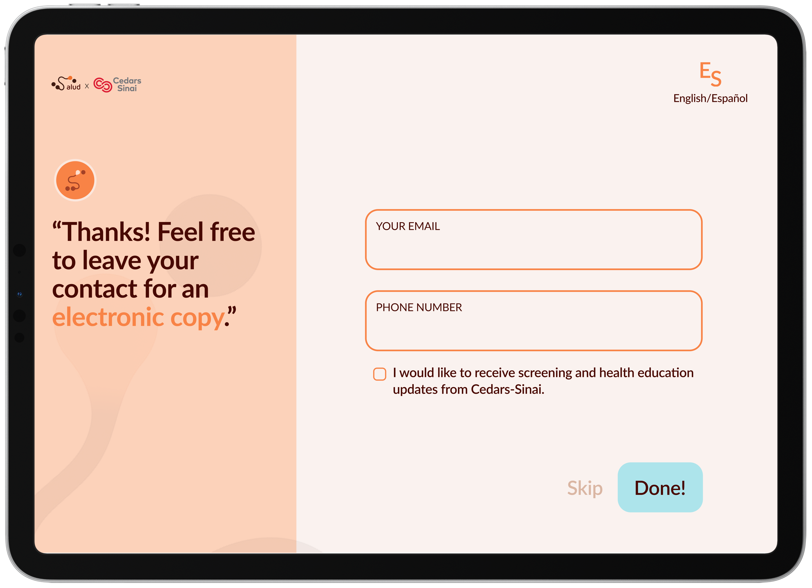
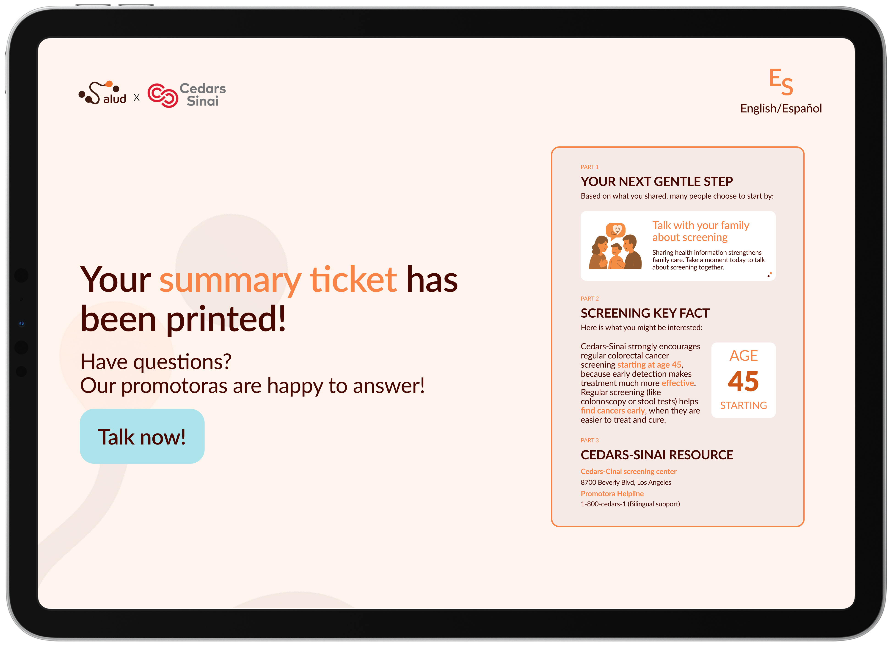
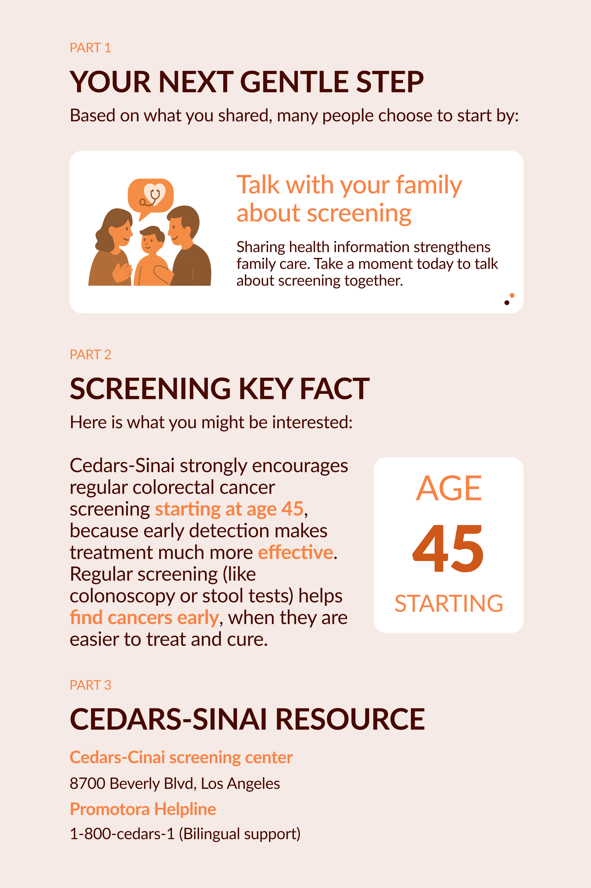
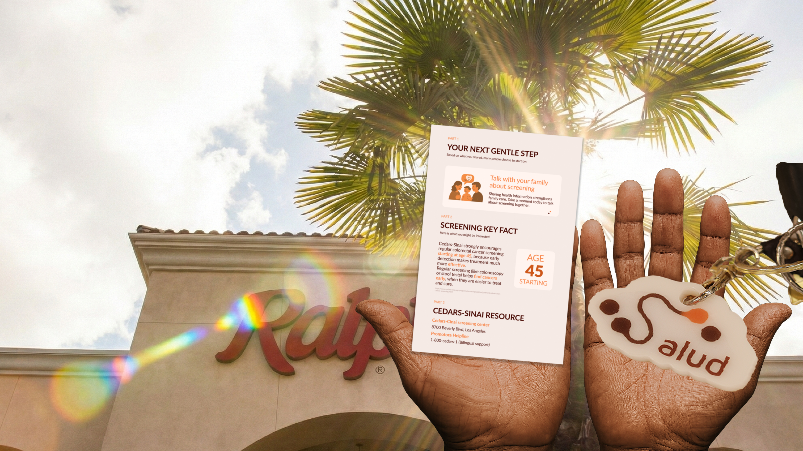

From Questions to Next Steps
Salud × Cedars-Sinai
An AI-powered, community-centered cancer screening experience designed with and for underserved Latinx communities in Los Angeles.

Help Latinx middle-aged and elderly adults aged 45–80 in Antelope Valley discover screening information they may not have heard before — empowering early detection and access within underserved communities.

AI Salud Station — deployed at Ralphs, Antelope Valley, Spring 2025
Why this community, and why now
Antelope Valley is a community in northern Los Angeles County where 53% of residents identify as Latinx — one of the highest concentrations in the region. Cedars-Sinai's Cancer Research Center for Health Equity already had an active outreach program here, with trained Community Cancer Navigators working directly with residents. But despite this infrastructure, cancer screening rates remained low and mortality rates remained high.

We interviewed Community Cancer Navigators with the Cedars-Sinai Antelope Valley program. What we found: the navigators themselves were the most trusted channel — but the materials they were given to deliver were working against them.
"There is a need for culturally tailored interventions to increase cancer awareness, education, cancer prevention, and access to early detection and screening."
— Antelope Valley Health Navigator, Cedars-SinaiFrom research to service design
We mapped the full journey — from the moment someone hears about screening to when they leave with a summary ticket — to find where trust breaks down and where design could intervene.

Early concept sketches — exploring service touchpoints and interaction models

- Cedars-Sinai already had navigator presence here
- Familiar, low-pressure environment — not a clinic or government building
- Highest-frequency community touchpoint — weekly routine for most families


An AI station that educates, not diagnoses
AI Salud Station is a tablet kiosk introduced by a promotora at Ralphs. Our goal was not to tell people what to do — but to build understanding quickly, educate, and support early detection so people are more open to learning, more willing to ask questions, and more likely to consider taking action. Users take a 10-question survey and receive a personalized printed summary. No diagnosis. No judgment. Just a gentle next step.
My role — kiosk interaction flow, all 10 survey questions UI, per-question feedback design, privacy system, AI boundary definition, physical kiosk enclosure design
Experience walkthrough — full kiosk prototype demo
Each of the 10 survey questions was designed to feel like a conversation, not a clinical assessment. I designed the UI for all 10 screens and the per-question AI feedback that appears after each answer — giving users a moment of gentle acknowledgment before moving forward.

The welcome screen states our privacy stance before users begin — in plain language, in both English and Spanish. Trust is established before a single question is asked.

The contact screen appears only after the survey ends, with a visible Skip option and an unchecked checkbox — consent is never assumed.

A clear call-to-action allows users to connect with a health navigator for questions or next steps — without requiring additional data sharing or digital follow-up.

The printed and electronic summaries include no identifiable information. All recommendations are based only on user responses, not stored records.
This boundary was a deliberate design decision — not a technical limitation. In a community where mistrust of AI is high, clarity about what AI can and cannot do is itself a trust-building act. The ticket contains three things: your next gentle step, one screening fact relevant to you, and nearby Cedars-Sinai resources. Nothing more.
Assess your health risk
Store your personal information
Make medical recommendations
Surface a relevant screening fact
Suggest one gentle next step
Connect you to local Cedars-Sinai resources
What we built, what we left behind
The most important lesson: effective health design requires meeting people in their existing networks of trust, not building new ones. The promotora is not a workaround — she is the system.

Physical touchpoints — tote bag, keychain, mirror, cookie, summary ticket, iPad kiosk enclosure